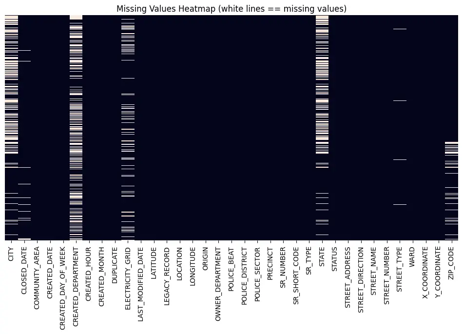
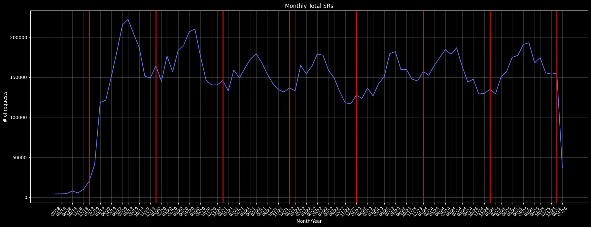
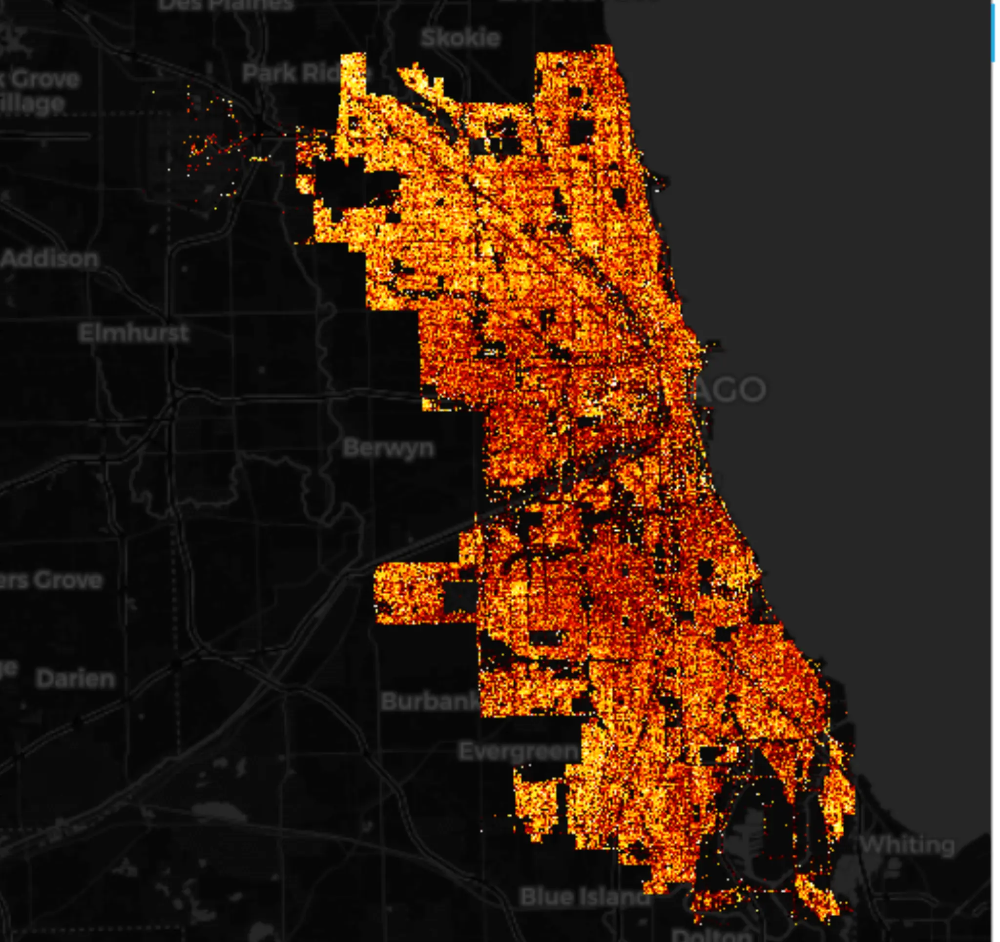
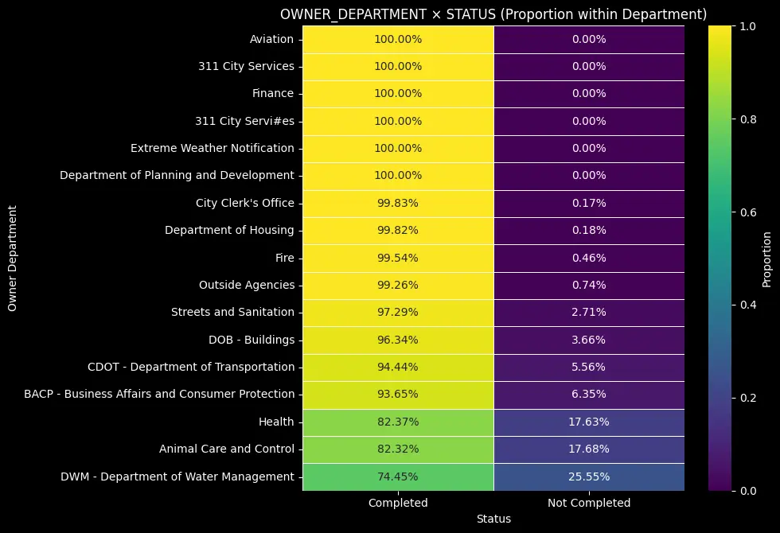

Chicago 311 Exploratory Analysis Case:
A Python-driven exploration of Chicago's 311 service requests, covering Time Series patterns, geography, routing, and resolutions.
Case Description
The City of Chicago wants to understand the operational dynamics of its 311 system in order to improve response times, reduce misrouting, and optimize service efficiency.
The dataset covers millions of requests, tracking departments, and request types across city regions, spanning several years of city activity.
To uncover actionable insights, the analysis was structured around 4 main objectives:
- What does the data quality look like?
- What are the Time Series patterns of the requests?
- How are requests distributed across city geography?
- How effectively do different departments complete their assigned requests?
Data Insights
1. Data Quality — Missing Values

The first step of any analysis is understanding the data quality. This heatmap visualizes missing values (nulls) across the dataset's columns. Solid colored bars indicate complete data, while white lines reveal missing information.
Key operational fields like `CREATED_DATE` and `SR_TYPE` are fully populated, ensuring the core analysis remains robust. However, fields related to specific location details (like `ZIP_CODE` or exact coordinates) show significant gaps, highlighting areas where data collection protocols during calls could be improved.
2. Time Series Patterns — Seasonality & Activity

The system's request volume shows clear annual seasonality, with most requests peaking during mid-year months and slowing down during winter. Daily activity is highly concentrated during weekdays and business hours, suggesting a predominantly routine-driven interaction with city services.
On the processing side, understanding these temporal curves allows the city to adjust static staffing levels. Fluctuations dictate exactly when temporary resources or overtime budgets must be strategically deployed to maintain service agreements.
3. Geographic Distribution — Density & Clusters

Not all city areas generate equal volume. The analysis bucketed service requests by geographic coordinates, neighborhoods, and specific clusters to identify where real volume is generated and where field teams should be stationed.
High density clusters appear heavily in the northern half of the city and downtown, making them disproportionately active compared to the south. Positioning operational bases near these critical hotspots minimizes average travel time and cuts fuel costs.
4. Service Request Resolutions — Completion Rates by Department

The analysis evaluates how effectively different departments resolve their assigned service requests. This heatmap highlights the proportion of Completed versus Not Completed statuses across various city departments.
Departments like Aviation, Finance, and 311 City Services show near-perfect completion rates (100%). In contrast, the Department of Water Management (DWM), Animal Care and Control, and Health exhibit the highest proportions of uncompleted requests (ranging from 17% to 25%), indicating potential operational bottlenecks or resource constraints in fulfilling these specific civic duties.